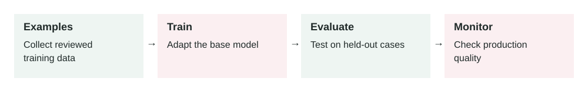

Fine-Tuning
In this lesson
- 1. What It Means
- 2. Why It Matters In Production Systems
- 3. How It Works Step By Step
- 4. How To Apply It In A Project
- 5. Real-World Example 1: Support Ticket Classification
- 6. Real-World Example 2: Brand-Consistent Email Drafting
- 7. Common Mistakes, Risks, And Trade-Offs
- 8. Practical Best Practices
- 9. Small Practice Exercise
2026-07-02 · Archived lesson · Original lesson text; technical claims not rechecked

Figure 8. Original study diagram added on 7 October 2026 to summarize this archived lesson. Each stage follows the previous stage; review may send the task back for correction.
1. What It Means
Fine-tuning means training an existing AI model further using your own examples.
You are not building a model from zero.
You start with a base model that already understands language, then teach it a specific pattern.
Example:
Input: Customer message
Output: Correct support classification
If you give the model many high-quality examples, it can become better at that repeated task.
Simple meaning:
Fine-tuning teaches a model to behave more like your examples.
Fine-tuning is useful when you want the model to consistently learn:
- A specific output format
- A classification style
- A writing tone
- Domain-specific labels
- Repeated decision patterns
- A narrow task with many examples
It is usually not the first thing to try.
Usually start with:
- Better prompt
- Better examples in the prompt
- Better retrieval or context
- Evaluation harness
- Fine-tuning only if the pattern is still not reliable
OpenAI’s model optimization docs describe fine-tuning as part of a wider loop with evals and prompting, not as a standalone magic fix: https://platform.openai.com/docs/guides/fine-tuning
2. Why It Matters In Production Systems
Fine-tuning matters when a production AI system needs consistent behavior at scale.
For example:
- A support system must classify tickets into the same categories every time.
- A legal assistant must produce summaries in a strict format.
- A sales assistant must write in the company’s approved tone.
- A moderation system must follow a custom policy.
- A small model must perform a narrow task cheaply.
Fine-tuning can help with:
- Consistency: fewer random format changes
- Lower prompt size: fewer examples needed in every request
- Lower latency: shorter prompts can be faster
- Lower cost: smaller fine-tuned models may handle narrow tasks
- Better task fit: model learns from many examples, not just a few
But it also adds operational cost.
You now need:
- Training data
- Data cleaning
- Evaluation
- Versioning
- Monitoring
- Rollback plan
- Privacy review
Fine-tuning is production work, not just a model setting.
3. How It Works Step By Step
A simple fine-tuning process looks like this:
Choose a narrow task
Example:
Classify customer support tickets into
billing,bug,feature_request, oraccount_access.Collect examples
Example training row:
{ "input": "I was charged twice this month.", "output": "billing" }Clean the dataset
Remove bad examples.
Fix inconsistent labels.
Example problem:
One person labels refund issues as "billing". Another person labels them as "payment".That will confuse the model.
Split data
Use one part for training and another part for testing.
Example:
- 80% training data
- 20% test data
Train the model
The provider creates a fine-tuned model based on your examples.
Evaluate the model
Compare:
- Base model
- Prompt-only model
- Fine-tuned model
Use real test cases.
Deploy carefully
Do not immediately send all traffic to the new model.
Start with a small percentage.
Monitor production
Track:
- Accuracy
- Cost
- Latency
- Error rate
- User complaints
- Drift over time
4. How To Apply It In A Project
Use this decision path.
First ask:
Is the problem caused by missing knowledge?
If yes, use RAG or context, not fine-tuning.
Example:
“What is our latest refund policy?”
Fine-tuning is bad for this because policies change.
Use retrieval from the policy database.
Next ask:
Is the problem caused by inconsistent behavior?
If yes, fine-tuning may help.
Example:
“Classify this ticket into exactly one of our 12 support categories.”
That is a repeated pattern.
Then ask:
Do we have enough high-quality examples?
If no, do not fine-tune yet.
Improve prompts and collect examples first.
A practical project plan:
- Build a prompt-based version.
- Create an evaluation set.
- Measure baseline accuracy.
- Collect failed cases.
- Clean and label training examples.
- Fine-tune.
- Compare against baseline.
- Deploy only if it clearly improves the metric.
Success should be measured, not guessed.
5. Real-World Example 1: Support Ticket Classification
Use case: A SaaS company receives thousands of support tickets.
They need each ticket classified into:
billing
login_issue
bug_report
feature_request
cancellation
security
Input:
“I cannot access my account after enabling two-factor authentication.”
Expected output:
{
"category": "login_issue",
"priority": "medium"
}
Prompt-only problem:
The model sometimes outputs:
{
"category": "security",
"priority": "high"
}
That may be understandable, but it does not match the company’s routing rules.
Fine-tuning dataset:
The team prepares examples:
{
"input": "I cannot access my account after enabling two-factor authentication.",
"output": {
"category": "login_issue",
"priority": "medium"
}
}
{
"input": "My invoice shows two charges for June.",
"output": {
"category": "billing",
"priority": "medium"
}
}
{
"input": "I found a way to see another user's data.",
"output": {
"category": "security",
"priority": "critical"
}
}
Outcome:
The fine-tuned model learns the company’s exact routing rules.
Support tickets go to the right team more often.
Important guardrail:
Security-related tickets should still be escalated by backend rules. Do not depend only on model classification.
6. Real-World Example 2: Brand-Consistent Email Drafting
Use case: A company wants sales emails in a specific voice.
Their approved style:
- Short paragraphs
- Warm but not too casual
- No hype
- Clear next step
- No fake urgency
- No unsupported claims
Input:
Customer: Acme Corp
Context: They asked about onboarding timeline.
Goal: Send follow-up email.
Expected output:
Hi Sarah,
Thanks for discussing the onboarding timeline today.
Based on your August target, the next useful step is to confirm the migration owner, data sources, and legal review timeline.
I can send a short onboarding plan tomorrow with milestones and responsibilities.
Best,
Ali
Prompt-only problem:
The model sometimes writes:
We are thrilled to revolutionize your workflow with our cutting-edge platform!
That does not match the brand.
Fine-tuning approach:
The team collects 1,000 approved sales emails.
Each example includes:
- Customer context
- Goal
- Approved email
The fine-tuned model learns the company’s writing style.
Outcome:
Emails need less editing.
Sales reps save time.
Important limitation:
Fine-tuning should not teach current customer facts. Those should come from CRM or retrieval.
Fine-tuning teaches style and structure. It should not replace live data.
7. Common Mistakes, Risks, And Trade-Offs
Mistake 1: Fine-tuning to add knowledge
Bad use:
“Fine-tune the model on our latest pricing page.”
Pricing changes.
Use retrieval instead.
Fine-tuning is better for behavior, format, tone, and repeated decision patterns.
Mistake 2: Training on messy examples
If your examples are inconsistent, the model learns inconsistency.
Bad labels create bad behavior.
Mistake 3: No evaluation set
If you do not measure before and after, you do not know if fine-tuning helped.
Mistake 4: Too broad a task
Bad:
“Fine-tune a model to be our whole company assistant.”
Better:
“Fine-tune a model to classify support tickets into our approved categories.”
Mistake 5: Ignoring privacy
Training data may include customer names, emails, secrets, or sensitive business information.
Clean the data before training.
Mistake 6: No rollback plan
A fine-tuned model can be worse than the original model.
You need a way to return to the old version.
Trade-off: Accuracy vs maintenance
Fine-tuning can improve consistency.
But it creates a new asset to maintain.
When rules change, you may need new data and a new fine-tune.
8. Practical Best Practices
Start with prompting and evals
Do not fine-tune before you know the baseline.
Use fine-tuning for repeated behavior
Good use cases:
- Classification
- Strict formatting
- Brand tone
- Domain-specific style
- Repeated structured extraction
Use RAG for changing knowledge
Policies, prices, product docs, and customer records should usually come from retrieval or tools.
Keep tasks narrow
One fine-tuned model should have a clear job.
Clean the data carefully
Remove duplicates, bad labels, private data, and contradictory examples.
Create a strong test set
Include:
- Normal cases
- Edge cases
- Hard cases
- Recently failed production cases
Compare against cheaper options
Sometimes a better prompt is enough.
Sometimes a smaller fine-tuned model is cheaper at scale.
Version everything
Track:
- Dataset version
- Prompt version
- Model version
- Evaluation results
- Deployment date
Monitor after deployment
Fine-tuned models can still fail.
Watch quality, cost, latency, and user feedback.
9. Small Practice Exercise
Imagine you are building an AI assistant for a real estate company.
The assistant must classify incoming leads into:
buyer
seller
renter
investor
not_relevant
A user message says:
“I own a 3-bedroom apartment and want to know what price I can get if I list it next month.”
Answer these:
- Is fine-tuning useful for this task?
- What should one training example look like?
- What should not be stored in the training data?
- What metric would you use to decide if fine-tuning helped?
- Would you use fine-tuning, RAG, or both?
A strong answer:
- Fine-tuning can help classify lead type.
- The correct label is likely
seller. - Private phone numbers and emails should be removed.
- Measure classification accuracy on real leads.
- Use fine-tuning for classification, but use RAG/tools for current market pricing.